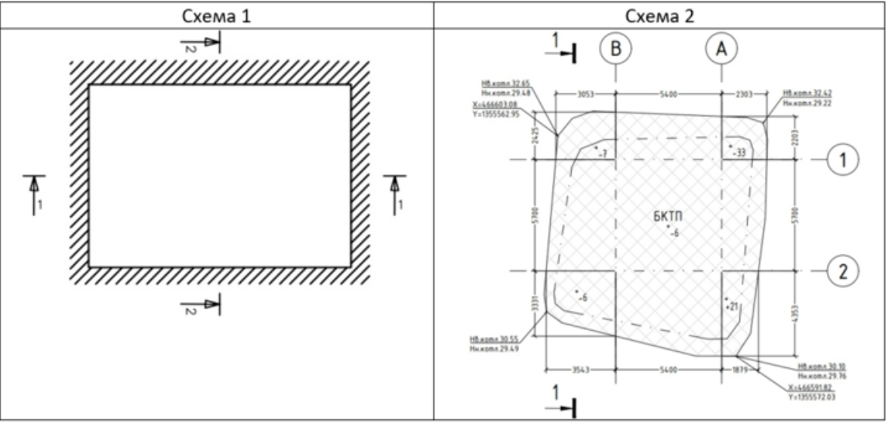
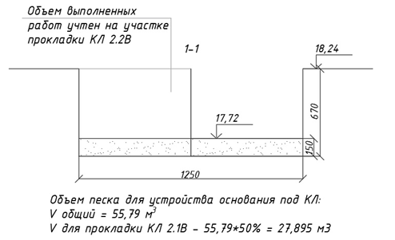

В чем залог успеха исполнительной схемы
Чем гармоничнее и грамотнее оформлена исполнительная схема, тем быстрее ее проверит и подтвердит стройконтроль, а по внешнему виду схемы сделает выводы о квалификации инженера, который ее составил. Некорректное и неполное оформление исполнительных схем служит поводом для отказа в приемке выполненных работ. На этом уроке мы раскроем залог успеха правильных схем, а вы увидите наглядно, как их оформлять.

Что такое исполнительная схема
Для начала посмотрите видео, в котором подробно рассказали про исполнительные схемы и наглядно показали, как их оформлять.
Исполнительная схема (ИС) – это отражение выполненных работ с натуры на чертеже. Необходимо отнестись к формированию исполнительных схем ответственно, так как они являются основным подтверждением объема выполненных работ.
ИС – одна из главных составляющих исполнительной документации. Именно она отражает наглядно объем и качество выполненных работ.
Почему красивые и правильные схемы – залог успешной защиты объемов
Рассмотрим пример выполнения реальных исполнительных схем на разработку котлована. Одна и та же работа, технология, схожие объемы, но совершенно разный вид и впечатление.
Смотрите ниже разные варианты исполнения схемы на котлован и экспертную оценку к ним.
Иллюстрация к уроку
Изображение сохранено с исходной встроенной страницы.

На что стоит обратить внимание:
- Шрифты. Используйте один и тот же шрифт на схемах. Это делает ее визуально грамотнее и упрощает чтение. GOST, ISOCPEUR, СПДС – это топографические шрифты, которые будут визуально украшать схему, т.к. до перехода в графические программы именно топографическими шрифтами заполняли схемы и подписывали штампы.
- Высота текста. Основные данные (отметки, высоты, отклонения) должны быть одинаковой высоты. Не стоит делать акцент на каких-либо данных.
- Размерные линии. Стрелки линий необходимо обозначать двойной засечкой, учитывать размер засечки в композиции всей схемы (она не должна быть больше текста, но и не должна быть слишком маленькой и незаметной)
- Типы линий, обозначение материалов. Условное обозначение откосов, материалов (песок, щебень, бетон и т.п.) дополняет визуально исполнительную схему и упрощает её чтение. Для дополнительных типов линий можно использовать модуль GK500 (см. ниже)

Внешний вид исполнительной схемы играет важную роль при сдаче выполненных объемов работ.

Кто подписывает исполнительную схему, правильное заполнение штампа
Согласно ГОСТ Р 51872-2024. штамп исполнительных схем принимается по ГОСТ Р 21.101-2026.

Исполнительные схемы нумеруются последовательно. Наименование лучше записывать созвучно с АОСР к которому прилагается сама схема. Для обозначения схем, которые касаются ж/б или металлических конструкций необходимо прописать оси, в которых находится предъявляемый элемент. Это поможет при делении конструкции на захватки, на которые оформляется ИД. Если предъявляется участок трассы нефтепровода, газопровода – указывается ПК, для кабельных линий – точки (от т. А до т. Б), или МП. Данные точки должны быть отражены и на самой схеме.
Состав подписантов исполнительной схемы проверяйте по ГОСТ Р 51872-2024 и организационно-распорядительным документам участников строительства для конкретного объекта.
Наименование объекта строительства прописывается полностью согласно договору или наименованию РД.
Штамп – это «имя документа», его необходимо правильно заполнить, чтобы избежать замечаний.
На ИС необходимо указывать фактические геометрические параметры предъявляемых элементов. Это ускорит проверку ИС и сэкономит время на корректировке документации.
Примеры основных схем указаны в ГОСТ Р 51872-2024. Для тех схем, примеры которых отсутствуют в ГОСТ, правила оформления не меняются. Должны быть указаны отклонения, проектные и фактические размеры и высотные отметки.
Основные правила выполнения ИС:
- ИС должна отражать факт выполненных работ – визуально и в геометрических параметрах.
- Размерные линии должны быть выставлены так, чтобы без использования графических программ можно было вычислить объем предъявленной конструкции.
- На ИС необходимо указать расчет выполненных объемов работ
- Необходимо указывать проектные и фактические отметки.
- Условные обозначения должны отражать все условные обозначения, указанные на схемах
- Указывать нормативный документ и отклонения, относящиеся к предъявляемой конструкции (СП, ГОСТ, ВСН с указанием пункта документа)
- Указывать систему координат, систему высот, какая отметка принята за 0.000
- Оборудование, которым выполнялась съемка, номер поверки и дата
Готовы проверить знания по теме урока? :) Не бойтесь практиковаться, ведь даже если вы ответили неверно, система подскажет правильный ответ и вы его обязательно запомните.
Встроенное упражнение — сохранен текст
Статическое представление
Flipcard
Текстовые фрагменты упражнения извлечены с исходной встроенной страницы. Проверка ответов и анимация здесь не работают.
- Новая статья WEB АРМ
- ИС отражает стоимость выполненных работ
- ИС отражает наглядно объем и качество выполненных работ
- Следующий вопрос
- На ИС необходимо указывать фактические геометрические параметры элементов, чтобы ускорить проверку ИС и сэкономить время на корректировке
- Необходимо отнестись к формированию исполнительных схем формально, т.к. они НЕ являются основным подтверждением объема выполненных работ.
- Необходимо отнестись к формированию исполнительных схем ответственно, т.к. они являются основным подтверждением объема выполненных работ.
Самое важное
Исполнительная схема – это отражение выполненных работ с натуры на чертеже
При составлении исполнительных схем обратите внимание на: шрифты, высоту текста, размерные линии, типы линий, обозначение материалов
Исполнительные схемы подписывают руководитель и исполнитель геодезических и строительных работ
{kind=link}